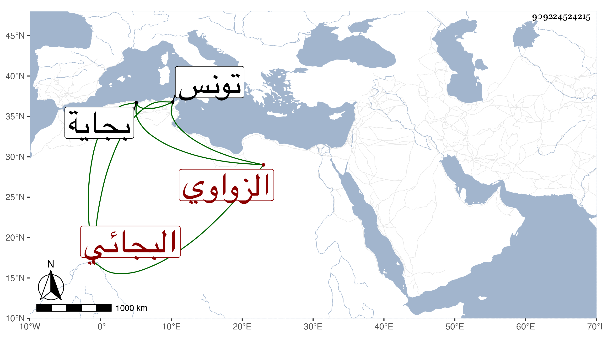

0902Sakhawi.DawLamic.ITO20230111-ara1.EIS1600.909224524215
Biography ID: 909224524215
719
منصور بن علي بن عثمان الزواوي ثم البجائي فقيهها لما امتنع أبو الحسن علي بن أبي فارس من مبايعة ابن أخيه أبي عمرو عثمان بن أبي عبد الله محمد بن أبي فارس قام معه وكانت له عصبة وقوة بحيث استبد ببجاية ثم تراجع ودخل بينهما في الصلح فكانت حوادث لم يتحرر لي الآن أمرها وإن أشار إليها المقريزي في حوادث سنة ثلاث وأربعين ، ورأيت من ورأيت من قال أنه الزواوي العالم الشهير وأنه مات في سنة ست وأربعين بتونس وكان عالما .
